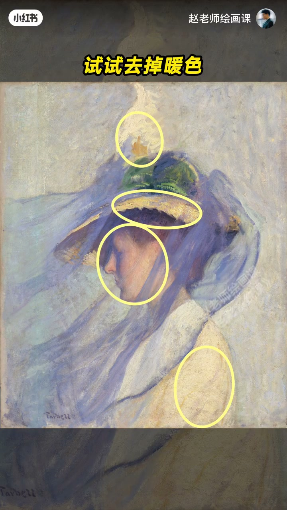
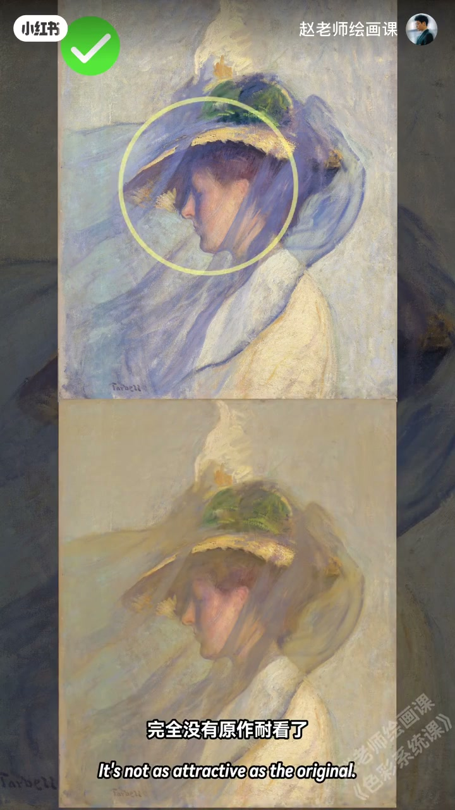
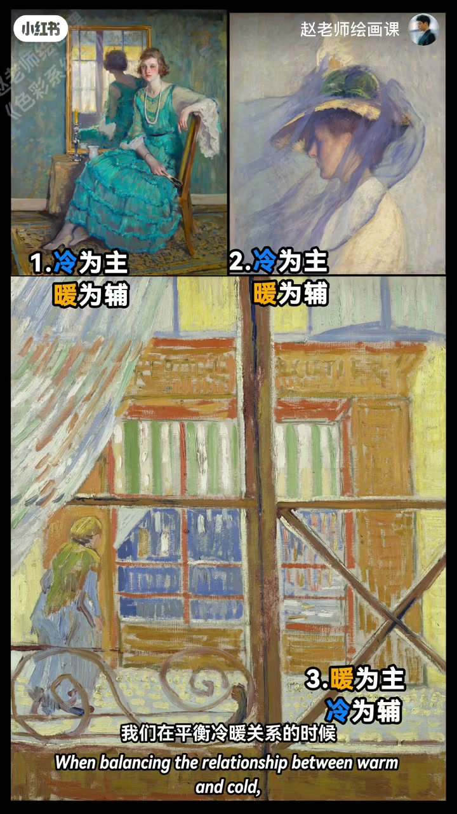
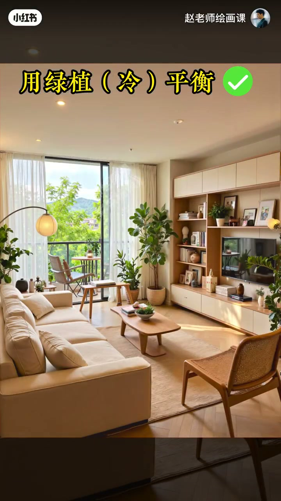

内容要点
画面不是太灰就是太燥，常因缺少冷暖平衡。大师面纱蓝紫不脏，靠几块暖色托住；去掉暖色瞬间冷清，把面纱放暖则脸甜腻——这叫冷暖平衡。梵高橱窗橙黄主体配门框醒目蓝才有张力；窗内暖金平衡周围冷，保留蓝调柔和又避冷清。高级感往往是心理上的平衡舒服。运用时冷暖面积并不对半：蓝调穿搭点缀小暖，奶油风用小冷（如绿）保温暖。太灰本质常是太冷清，可试高纯暖色。
知识结构
去暖冷清；放暖则腻＝冷暖平衡。
梵高蓝橙张力；暖金平衡冷。
面积非对半；穿搭／奶油风；灰＝冷清。
冷暖平衡看面积主辅，不靠对半堆砌；灰闷时先检查是否缺暖（或过冷清）。
00:00-00:59面纱实验：何谓冷暖平衡
开场点出太灰或太燥，引出规律冷暖平衡。薄纱蓝紫不显脏，因有暖色存在；去掉暖色，蓝紫不再透亮而冷清；正是暖色让蓝紫活起来。相反把面纱蓝紫放暖，脸上金色与灰马上甜腻，全无原作味道——这就叫冷暖平衡。
00:30／00:55 去暖对照可指认。


00:59-01:55梵高与「高级感」
梵高作品橱窗橙黄占主体，远处门框透醒目蓝；把门框蓝换成偏暖，微妙张力消失。另一幅窗内暖金巧妙平衡周围冷，既保留蓝色调整体柔和，又避免冷清，看起来高级很多。
所谓高级感，其实是色彩唤起心理上平衡与舒服的感觉。

01:55-03:01面积占比与生活应用
回到三图：冷暖占比并不平均，平衡时要特别注意面积。蓝调穿搭想高冷清爽又不想难亲近，来一小块暖点缀。奶油风大house别只暖色无脑堆砌，用小面积冷色平衡——相对暖黄，绿偏冷，最大保留温暖感，高级感就出来。
太灰老问题：灰的本质常是画得太冷清；试试高纯度暖色。作业：冷暖其他作用，找画或照片评论区说明。02:00／02:25 证据。

完整转录（89段）
以下文本由 Whisper medium 模型自动转录，可能存在少量识别误差，已尽可能修正。
为什么你的画面不是太灰
就是太灶
因为啊
你可能没有掌握这个色彩规律
叫冷暖平衡
那什么是冷暖平衡
来
让我们在大师作品里找找答案
画面中
薄纱的蓝紫色一点也不显脏
完全是因为这几块暖色的存在
不信
我们来去掉这些暖色
怎么样
现在的蓝紫色还那么好看吗
好像瞬间不透亮了
变得冷清了
你看
正是这些暖色的存在
才让蓝紫色活了起来
相反
如果把面纱的蓝紫色放暖以后
脸上的金色鱼灰
马上变得甜甜腻腻的
完全没有原作
那你看吧
这就叫冷暖平衡
我们再来看梵高的这幅作品
画面里橱窗的橙黄色
占据主体
远处门框里
透着一块醒目的蓝色
试试看
把门框里的蓝色
换成偏暖的颜色呢
是不是效果大不如从前
那种微妙的张力一下就没了
而这幅画面中
窗户里的暖金色
巧妙的平衡了周围的冷色
让整个画面既保留了
蓝色调的整体和柔和
又避免了一种冷清感
看起来确实高级了很多
这也要说啊
所谓的高级感
其实就是色彩
唤起了我们心理上的一种
平衡和舒服的感觉
好了
理解了原理
我们该如何来运用呢
我们回到刚才这三图画面
很明显
画中的冷暖色占比
并不是平均的
所以我们在平衡冷暖关系的时候
要特别注意面积占比
举个例子
比如这身穿搭啊
你喜欢蓝色调的高冷和清爽
又不想让人觉得你难以亲近
那来一小块暖色点缀一下
你看
效果是不是好很多啊
再笔如你理想中的奶油风大house
千万别只知道用暖色无脑对气
记得用小面积的冷色平衡一下
相对于暖黄色
绿色是偏冷的颜色
最大程度的保留了整体的温暖感
色彩的高级感一下子就出来了
最后啊
我们回到那个太灰的老问题
其实啊
灰的本质
就是画面的色彩画的太冷清
我们试试高纯度的暖色吧
你会回来
感谢我的
好了
以上就是今天的内容
最后我们来留一个作业
你还知道冷暖色的其他作用吗
找出一幅画或者一张照片
发到评论区
说说自己的理由
那我们下期再见咯
拜拜